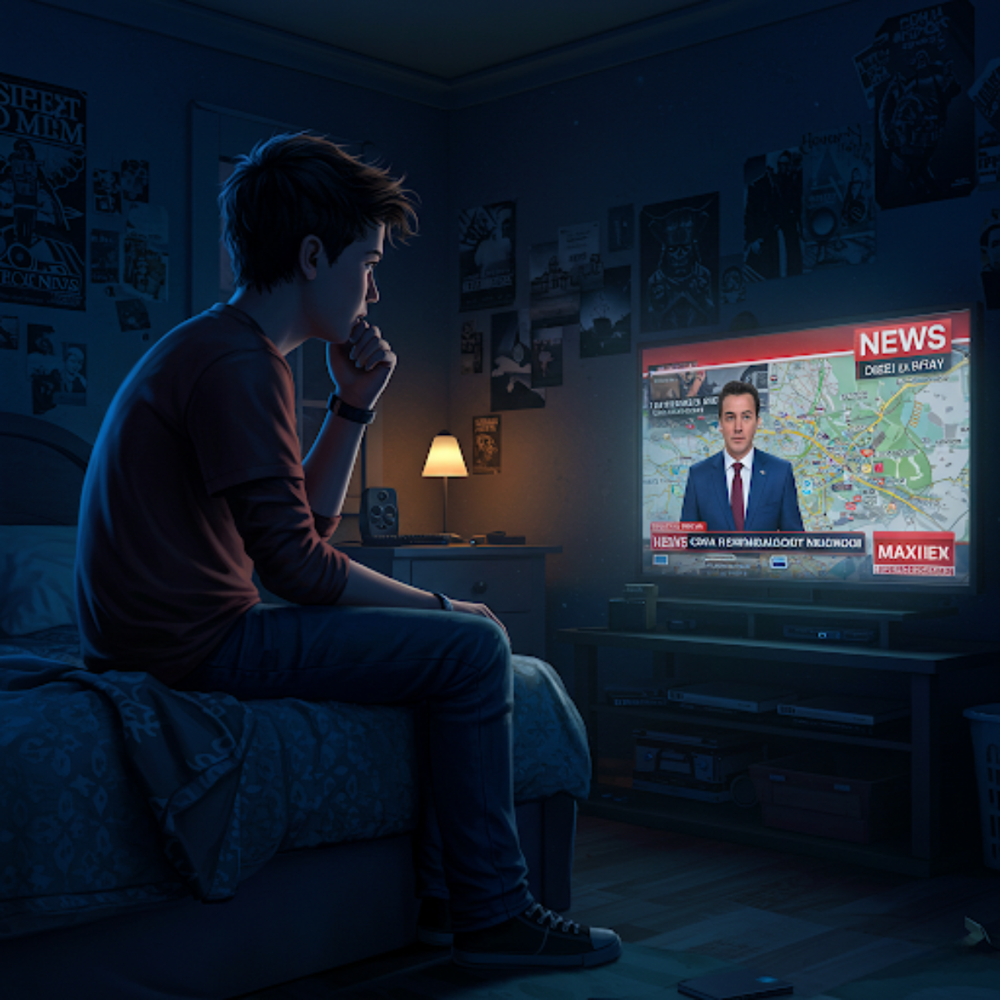

🛠
Максим бачить у новинах репортаж про події в його рідному місті.
❤️
Уникати перегляду новин, щоб не травмуватися.
Обмежити час перегляду новин та обговорювати побачене з кимось, кому довіряє.

❤️
Далі